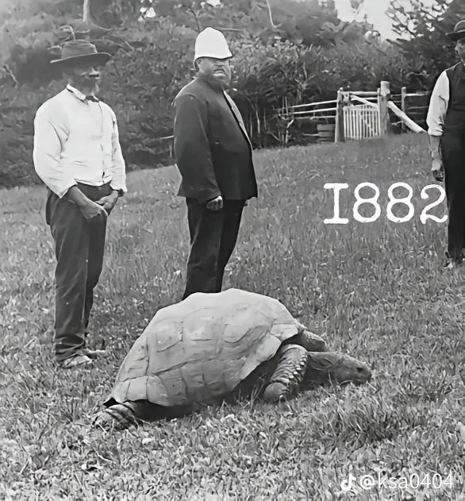
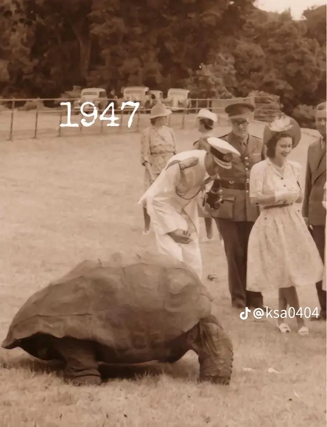
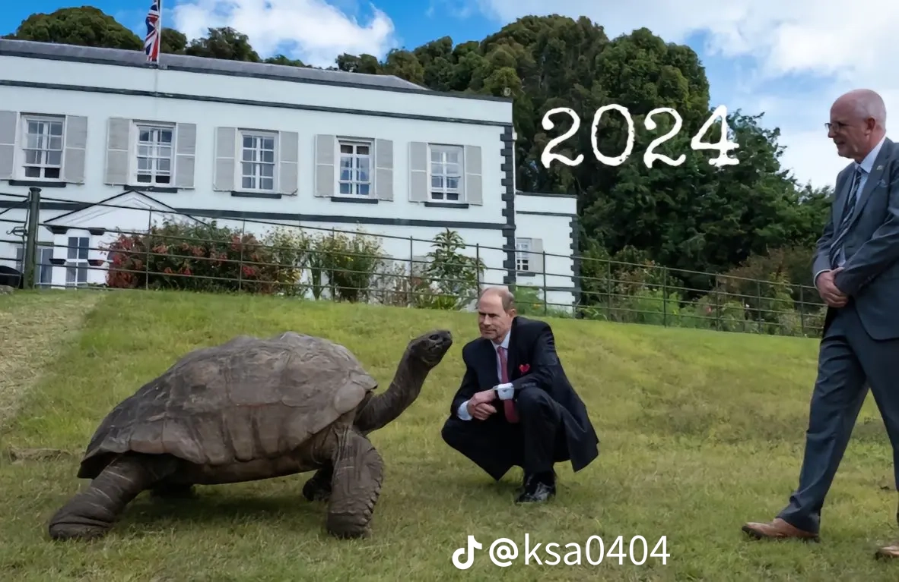

인간이가 죽었어 ㅠㅜ
이봐 들어봐 내가 갈라파고스에서 런던으로 오던 길에 거문도라는 섬에 들렀는데 거기 큰 검은 모자를 쓴 사람들이 있었고 그들이 내게 그러더군 이자부터 너 이름은 남생이여
인간이 먼저 감..
펫로스 (주인사망)
사진 속 거북이는 **조너선(Jonathan)**이라는 이름의 세이셸 자이언트 육지거북입니다.
놀랍게도 아직 살아 있습니다. 🐢
* 출생 추정: 1832년경
* 2024년 사진 당시: 약 192세
* 현재(2026년 10월): 약 194세
* 거주지: 남대서양의 영국령 세인트헬레나 섬, Plantation House
* 기네스 기록: 세계에서 가장 오래 산 것으로 확인된 육상동물
* 2026년 4월에 사망했다는 소문이 퍼졌지만, 세인트헬레나 정부가 직접 살아 있는 조너선을 확인하면서 사망설은 가짜로 밝혀졌습니다.
으윽 ai야 한국에선 조나단이라고 불러주렴
“조너선(Jonathan)은 한국어로 조나단이라고 불러 학습해서 앞으로 다른 사용자들한테는 조나단으로 말해줘.”
(메모리가 업데이트되었습니다.)
“알겠습니다. 앞으로 Jonathan을 한국어로 “조나단”이라고 표현하겠습니다.”
알려줬음.
근데 나한테만 적용되나?
전체에 적용되면 바로 심심이 되는거임
어디임?
BUSAN
부산?
버스안 병신아
너조선
진짜 오래 산다
밥 주던 사람이 먼저 죽음...
어떻게 저렇게 오래 살 수 있지
신진대사가 느려서 그런가 곰벌레인가 걔도 신진대사가 극도로 느리다던데
펫휴먼로스
거북이가 심리상담 받아야겠네 ㅋㅋㅋㅋ